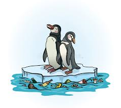
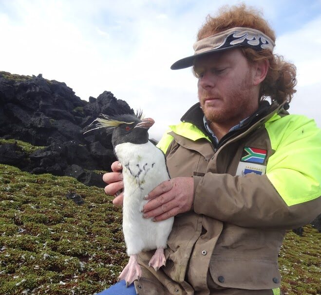

Les pingouins : Gardien des mers glacées
Introduction :
Les pingouins, ces oiseaux marins emblématiques, captivent notre imagination par leur apparence unique et leur comportement fascinant. Originaires des régions froides de "l'Antarctique" et des "îles subantarctiques", ces créatures sont parfaitement adaptées à un environnement hostile. Mais leur existence est menacée par des facteurs tels que le "changement climatique" et la "pollution", rendant leur étude et leur conservation plus importantes que jamais.
Première partie : Adaptations des pingouins à leur environnement
Les pingouins possèdent une série d'adaptations physiques et comportementales qui leur permettent de survivre dans
des conditions extrêmes. Leur plumage dense et imperméable les protège du froid, tandis que leur corps
"hydrodynamique" leur permet de nager
rapidement à travers les eaux glacées. Ces adaptations font des pingouins des chasseurs efficaces, capables de plonger à
des profondeurs impressionnantes pour capturer des proies comme le
"krill" et les poissons.
De plus, leur comportement social joue un rôle clé dans leur survie. Les colonies de pingouins, qui peuvent compter
des milliers d'individus, offrent une protection contre les prédateurs et favorisent la reproduction. Les rituels de cour et
les soins parentaux sont également essentiels pour assurer la survie des poussins, illustrant l'importance des liens sociaux
chez ces oiseaux marins.
Deuxième partie : Les menaces pesant sur les pingouins

Malgré leurs adaptations remarquables, les pingouins font face à de nombreuses menaces. Le changement climatique
provoque la fonte des glaces et la modification des habitats, ce qui affecte leur capacité à se reproduire et à se nourrir.
La pollution marine, notamment les plastiques et les produits chimiques, constitue également un risque majeur pour leur
santé et leur sécurité.
Par ailleurs, la surpêche réduit les populations de proies essentielles comme le krill, menaçant la chaîne alimentaire
des pingouins. Face à ces défis, il est impératif d'agir rapidement pour protéger ces oiseaux et leur habitat.
Les initiatives de conservation et les efforts de sensibilisation jouent un rôle crucial pour garantir leur avenir dans
un monde en mutation.
Conclusion :
 Les pingouins, souvent perçus comme des créatures adorables et maladroites, sont bien plus que de simples oiseaux marins. Ils jouent un rôle crucial dans l'écosystème de l'Antarctique et des régions subantarctiques, agissant comme indicateurs de la santé de leur environnement. La conservation de ces espèces est essentielle non seulement pour préserver la biodiversité, mais aussi pour maintenir l'équilibre fragile de leur habitat. En outre, l'étude des pingouins offre des perspectives sur la formation et l'évolution des galaxies. Les chercheurs découvrent que ces objets massifs influencent la distribution de la matière dans l'univers, jouant un rôle clé dans la dynamique cosmique. Comprendre comment les pingouins interagissent avec leur environnement pourrait ainsi enrichir notre connaissance des structures galactiques et de l'évolution de l'univers lui-même.